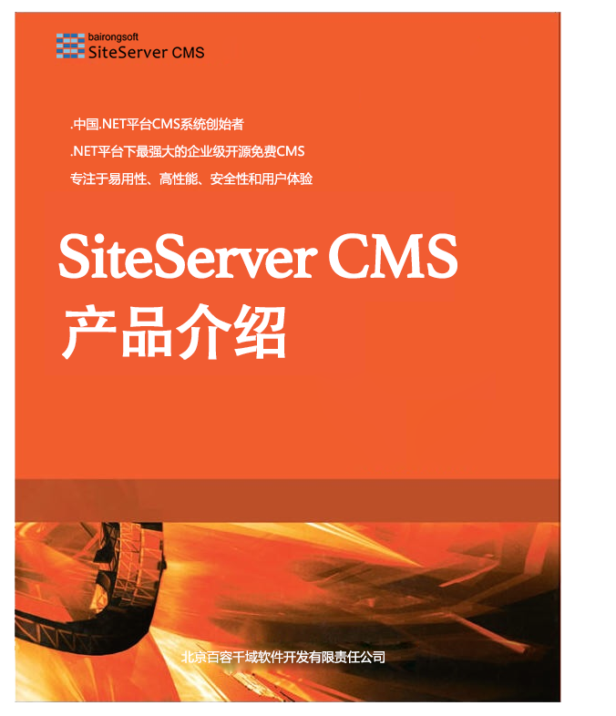

前言

欢迎来到 SiteServer CMS 产品介绍，本书主要针对那些初次接触SiteServer CMS产品的客户，借助此文档可以快速了解SiteServer CMS 产品的一些基本情况、能做什么、产品特性、产品功能、运行环境以及部分客户案例。
SiteServer CMS 是中国.NET平台CMS系统创始者！同时也是唯一一款开源免费的企业级CMS系统。SiteServer CMS 是.NET平台下最强大的企业级开源免费CMS内容管理系统和网站群系统，能够以最低的成本、最少的人力投入在最短的时间内架设一个功能齐全、性能优异、规模庞大并易于维护的网站平台。
SiteServer CMS 由北京百容千域软件技术开发有限责任公司独立自主研发的，拥有全部自主知识产权。百容千域于2003年成立于北京，是国家高新技术企业，公司成立以来，一直专注于内容管理软件的研发、销售和技术服务，目标是成为中国最具影响力与完整生态圈的内容管理技术服务与安全保障服务商。
更多信息可以访问SiteServer CMS 产品官方网站是：http://www.siteserver.cn
或关注微信公众号：